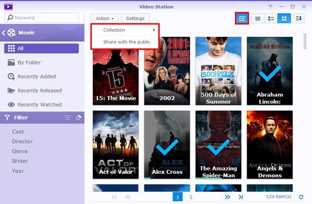
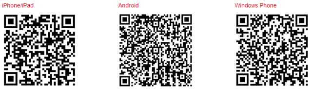

Áttekintés
A Video Station-nal, könnyen szervezheti és kategorizálhatja a videó gyűjteményeket különböző alapértelmezett vagy egyéni könyvtárakba, annak érdekében, hogy sokkal hatékonyabban megtalálja a kívánt videót. Ezen kívül, a videók lejátszása és megosztása is ugyanolyan könnyű és egyszerű, mint néhány egyszerű kattintás.
1. A Video Station telepítése
A Video Station telepítéséhez, kérjük, látogasson el a Csomagkezelési központba, keresse meg a Video Station-t, majd kattintson a Telepítés gombra.

2. Tárolja és kategorizálja a videókat Alapértelmezett könyvtárakba
A Video Station három alapértelmezett könyvtárat biztosít, a baloldali panelen: Film, TV-műsor és Házi videó. Annak érdekében, hogy a videók helyesen indexeltek és kategorizáltak legyenek, minden könyvtárhoz videómappákat kell hozzáadni, majd azután tárolni a fájlokat a megfelelő videómappákba. Alapértelmezés szerint, három videómappát hoztak létre a video megosztott mappa pont alatt, a három alapértelmezett könyvtár számára: film, TV-műsor és házi videó. Azonban, ez a három mappa mellett, a következőket teheti, hogy több videó mappát adjon a könyvtárakhoz.
A rendszer automatikusan megkeresi az interneten a kapcsolódó metaadatokat és egyéb információkat (pl. poszter kép) a két videó típus számára (film és TV-műsor). Tehát, hogy biztosítsa azt, hogy a videókat párosítani lehet a megfelelő információkkal, erősen ajánlott, hogy a videóknak meg kell egyezniük a megadott videó típusnak a saját könyvtárával.
Videó mappák hozzáadása az alapértelmezett könyvtárak számára
- Nyissa meg a Beállítások > Könyvtárat.
- Kattintson a Létrehozás > Mappa hozzáadására, hogy a Synology NAS-on válasszon egy mappát, és válassza ki a célkönyvtárat. Hozzáadhat akár 100 videó mappát is egy könyvtárba, de ha egy mappa ki van jelölve, többé sem a mappát, sem az al-mappákat nem lehet másik könyvtár számára kiválasztani.
- Tárolja a videó fájlokat a videó mappákba, hogy kategorizálhassa a videókat a megfelelő könyvtárakba.
- Most már a könyvtárakból böngészheti, és nézheti a kívánt videókat!


3. A videók tárolása és kategorizálása Egyéni könyvtárakba
A három alapértelmezett könyvtár mellett, amelyet bárki elérhet az alapértelmezés szerint, ön mint DSM admin vagy a felhasználók akik a administrators csoportba tartoznak, úgyszintén egyéni könyvtárakat hozhat létre és hozzáférési jogosultságokat nyújthat a felhasználók számára.
3.1 Egyéni könyvtárak létrehozása
- Nyissa meg a Beállítások > Könyvtárat, és kattintson a Létrehoz > Könyvtárat létrehoz menüpontot.
- Adjon meg egy nevet az új könyvtárnak, válassza ki, hogy milyen típusú videókat szeretne a mappába helyezni, majd válassza ki a Nyilvánosmenüpontot ha azt szeretné, hogy a könyvtár elérhető legyen mindenki számára, vagy válassza ki a Saját menüpontot, ha korlátozni szeretné a hozzáférést bizonyos felhasználóknak, akik jogosultsággal rendelkeznek. Kérjük, vegye figyelembe, hogy a mappába helyezett videóknak meg kell egyezniük a kiválasztott típussal, ami pontosságot biztosít az interneten begyűjtött videók információjával.
- Ha Sajátot választ, kattintson a Jogosultság hozzárendelése gombra és jelölje ki a jelölőnégyzeteket, hogy hozzáférést biztosítson a felhasználók számára.

3.2 Videó mappák hozzáadása az egyéni könyvtárakba
- Nyissa meg a Beállítások > Könyvtárat.
- Kattintson a Létrehozás > Mappa hozzáadására, hogy a Synology NAS-on válasszon egy mappát, és válassza ki a célkönyvtárat. Hozzáadhat akár 100 videó mappát is egy könyvtárba, de ha egy mappa ki van jelölve, többé sem a mappát, sem az al-mappákat nem lehet másik könyvtár számára kiválasztani.
- Tárolja a videó fájlokat a videó mappákba, hogy kategorizálhassa a videókat a megfelelő könyvtárakba.
- Most már a könyvtárakból böngészheti, és nézheti a kívánt videókat!
4. Videók lejátszása
Ha már különböző könyvtárakba kategorizálta a videó fájlokat, akkor kövesse az alábbi lépéseket, hogy lejátssza a videókat a Video Station-en. Legelőször, erősen ajánlott a VLC media player (Windows, Linux) telepítése a számítógépre. Amellett, hogy lejátssza a videókat a helyi számítógépen, akkor is videófolymokat készíthet a DLNA/UPnP-kompatibilis DMA-ra vagy AirPlay kompatibilis eszközökre a videó lejátszásához.
Játssza le a videókat a beágyazott videó lejátszóval
- Válassza ki a kívánt videoklipet, majd kattintson a lejátszás ikonra a videoképen, vagy kattintson a Művelet > Lejátszás menüpontra.
- A videó lejátszás azonnal kezdődik. Ha nem, kérjük, győződjön meg arról, hogy a webböngésző támogatja a videó formátumát vagy, hogy telepített VLC bővítményt a számítógépre.
- Szükség szerint használja a képernyőn megjelenő gombokat és a folyamatjelző sávot a Video Player alján. Úgyszintén, beállíthatja a hangerőt, kiválaszthatja a videó lejátszási minőséget és a hangsávot, bekapcsolhatja a feliratokat, vagy videófolyamot készíthet egy másik eszközre (ha van ilyen).


Részletes információkért a VLC bővítményről és a támogatott eszközökről, lássa a DSM Súgó > Video Station > Videolejátszás menüpontot.
5. Videók megosztása a nyilvánossággal
A nyilvános megosztás funkció segítségével könnyedén megoszthatja videóit másokkal a Video Station használatával. A megosztott videók nyilvánosan hozzáférhetőek bárki számára aki hivatkozással rendelkezik, és ezt kezelni lehet a Gyűjtemény oldalon.
Videók megosztása másokkal
- Nyissa meg bármelyik videó könyvtárat, és kattintson a Minden gombra a jobb felső sarokban, az összes videók megtekintéséhez ebben a könyvtárban.
- Kattintson a Választási mód ikonra, vagy nyomja meg és tartsa lenyomva a Ctrl vagy a Shift billentyűt több videó kiválasztásához. Majd kattintson a Művelet > Megosztás a nyilvánossággal menüpontra.
- Ha csak egy videót választott ki a megosztáshoz, a videó egy megosztott gyűjteményhez lesz hozzáadva, Megosztott videók néven. Ott egyenként kezelheti a megosztott videókat.
- Ha több kiválasztott videót kíván megosztani, a videók egy új közös gyűjteménybe lesznek csoportosítva.
- Alternatívaként, kattintson a Művelet > Gyűjtemény menüpontra, hogy kiválasztott videókat helyezzen egy meglévő közös gyűjteménybe (ha van ilyen). 
- Adjon meg egy érvényességi időt, ha szükséges.
- Egyszerűen másolja és illessze be a hivatkozást e-mailekbe, azonnali üzenetekbe és weboldalakra, hogy mindenkivel meg tudja osztani a videókat.
6. Videók szervezése és megtekintése mobileszközökön
A Video Station-hoz való csatlakozáshoz mobil eszközökön keresztül, letöltheti a DS videót iOS/Android eszközzel vagy Windows Phone-al használva az alábbi QR-kódokat a videók lejátszásához és a gyűjtemények megszervezéséhez a mobil eszközén, vagy videófolyamokat készíthet a DMA vagy AirPlay eszközökre otthon és útközben.
- Korábban a témában: Élvezze a Synology NAS-on tárolt multimédiás tartalmakat nagy képernyőkön
- Következik a témában: Élvezze a Synology NAS-on tárolt zenét Audio Station-nal